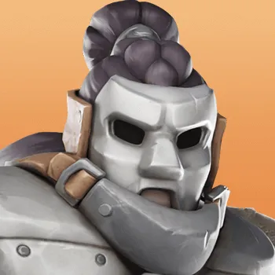
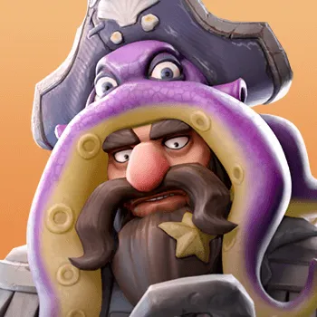
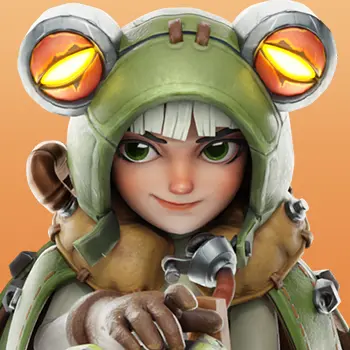

8 поколение
Щиты и дебаффы. Выбери героя ниже. Карточка открывает полный гайд с навыками, снаряжением, применением, плюсами и минусами.

Пехота · Мифический
Гатот
Колесо удачи · защита
Открыть полный гайд →
Стрелки · Мифический
Хендрик
Ослабление защиты · сборы
Открыть полный гайд →
Копейщики · Мифический
Соня
Заморозка · PvP
Открыть полный гайд →Главное о поколенииЗащита становится плотнее, а атакующие герои сильнее режут врага.
Кого смотреть в первую очередьГатот хорош F2P, Хендрик полезен атакующим сборам.
Как пользоваться разделомСравни роли героев здесь, затем открой карточку нужного героя для полного гайда.